Crecimiento Económico. Ideas, productividad e investigación y desarrollo
- Crecimiento
Económico | Ideas y productividad: Investigación y Desarrollo
- Modelo de Investigación y Desarrollo (I&D)
- Modelo de Investigación y Desarrollo (I&D)
- Modelo de Investigación y Desarrollo (I&D)
- Modelo de Investigación y Desarrollo (I&D)
- Investigación y crecimiento de la productividad
- Investigación y crecimiento de la productividad
- Investigación y crecimiento de la productividad
- Investigación y crecimiento de la productividad
- Investigación y crecimiento de la productividad
- Investigación y crecimiento de la productividad
- Investigación y crecimiento de la productividad
- Investigación y crecimiento de la productividad
- Investigación y crecimiento de la productividad
- Investigación y crecimiento de la productividad
- Investigación y crecimiento de la productividad
- Investigación y crecimiento de la productividad
- Investigación y crecimiento de la productividad
- Investigación y crecimiento de la productividad
- Investigación y crecimiento de la productividad
- Investigación y crecimiento de la productividad
- Investigación y crecimiento de la productividad
- Investigación y crecimiento de la productividad
Crecimiento Económico | Ideas y productividad: Investigación y Desarrollo
Modelo de Investigación y Desarrollo (I&D)
Romer (1990)
La economía se dedica recursos no solo a la producción de bienes sino también hacia la producción de nuevas tecnologías.
Supone que la mano de obra, el capital y la tecnología se combinan por un sector intermedio especializado para producir mejoras en la tecnología.
Puntos relevantes:
Dificultades empíricas en contraste con Solow y Ramsey.
No hay mathiness (en contraste con otros modelos endógenos)
El modelo hace otras dos simplificaciones:
Primero, se asume que tanto la I&D como las funciones de producción de bienes son funciones Cobb-Douglas generalizadas, es decir, la función de producción no tiene necesariamente rendimientos constantes a escala.
Como en el modelo de Solow, toma la fracción de la producción ahorrada y las fracciones de la fuerza laboral y el acervo de capital utilizados en el sector de I&D como exógenas y constantes.
Modelo de Investigación y Desarrollo (I&D)
Economía de las ideas
Ideas son bienes no rivales
Bienes no rivales producen rendimientos crecientes a escala al ser excluibles
Ejemplos:
Terapia de rehidratación oral (Ejemplo de Romer)
Replicar la producción de una fábrica vs instrucciones para hacer una computadora
Hacer mas productivo a una persona vs hacer más productivo a un número amplio de personas
Es muy fácil obtener crecimiento en un agregado en cualquier modelo, incluso en Solow, debido al crecimiento de la población. Más trabajadores automáticos significan que se producen más coches.
En Solow, esto no puede sostener el crecimiento per cápita porque necesitamos crecimiento en automóviles por trabajador. Pero en Romer, este no es el caso: más investigadores producen más ideas, lo que hace que todos estén mejor debido a la no rivalidad.
Modelo de Investigación y Desarrollo (I&D)
Romer se centró originalmente en ideas no rivales que eran muy fáciles de copiar, como software, libros o planos. Al ser fáciles de copiar, no son fácilmente excluibles y, por lo tanto, sería difícil obtener rentas sobre ellas sin algún tipo de protección.
Las patentes o los derechos de autor otorgan exclusividad a estas ideas fáciles de copiar. Esos derechos de propiedad intelectual ofrecen el incentivo para que las personas creen nuevas ideas fáciles de copiar.
La economía del crecimiento endógeno implica una relación no lineal entre los derechos de propiedad intelectual y la actividad innovadora.
Paradoja:
Sin protección de patentes nadie querrá innovar.
Con demasiada protección de patentes será demasiado difícil reemplazar a las empresas existentes.
Modelo de Investigación y Desarrollo (I&D)
Crecimiento endógeno y capital humano
En las visiones de Romer y Lucas de como generar crecimiento endógeno, se contesta de forma distinta a la pregunta: ¿Los factores de la producción se igualan a su producto marginal?
Sólo dos de los siguientes tres argumentos pueden ser ciertos:
Los factores rivales de la producción no tienen retornos constantes o crecientes a escala.
Los factores no rivales reciben algún pago de la producción.
Los factores rivales reciben un pago de la producción igual a su producto marginal.
Para Romer, las primeras dos son ciertas: (1) ejemplo de replicación de la fábrica; (2) sustenta su teoría; (3) no puede ser verdad. Si los propietarios de los factores no rivales son compensados de alguna manera, será menos que su producto marginal.
Para Lucas, la 1 y la 3 son verdaderas: Esto puede ser verdadero si sólo hay factores rivales y el crecimiento balanceado se explica con la adquisición de conocimiento.
Investigación y crecimiento de la productividad
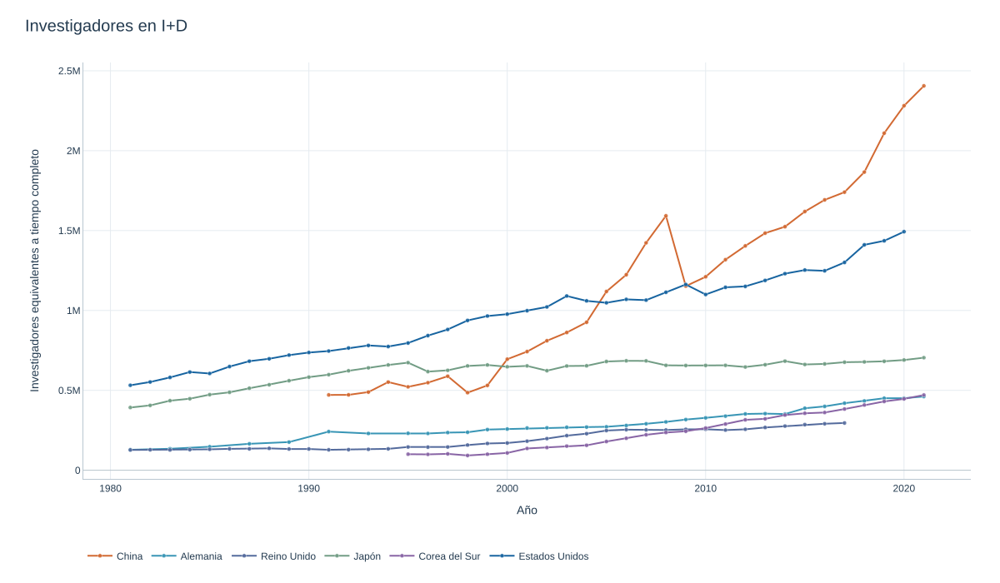
Investigación y crecimiento de la productividad
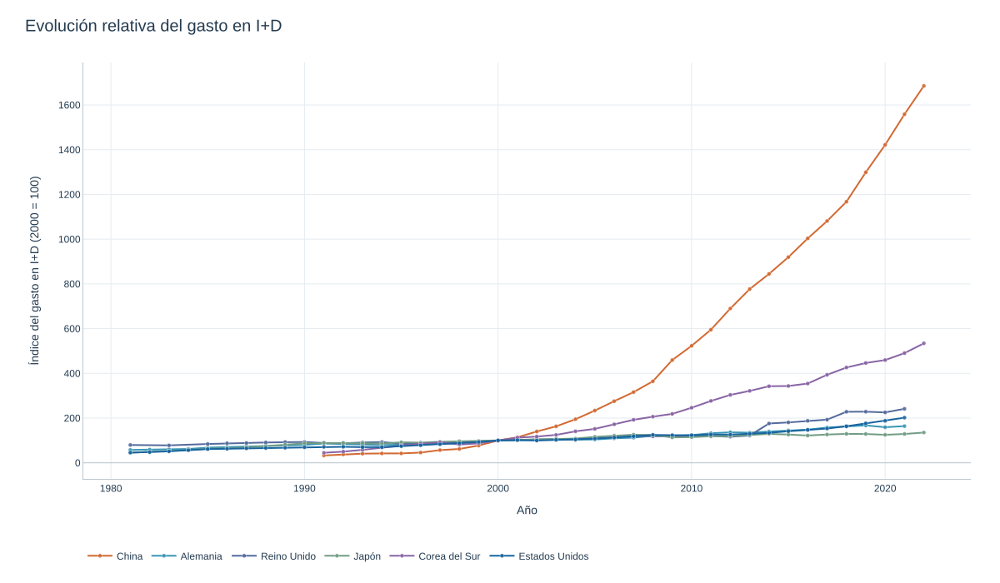
Investigación y crecimiento de la productividad
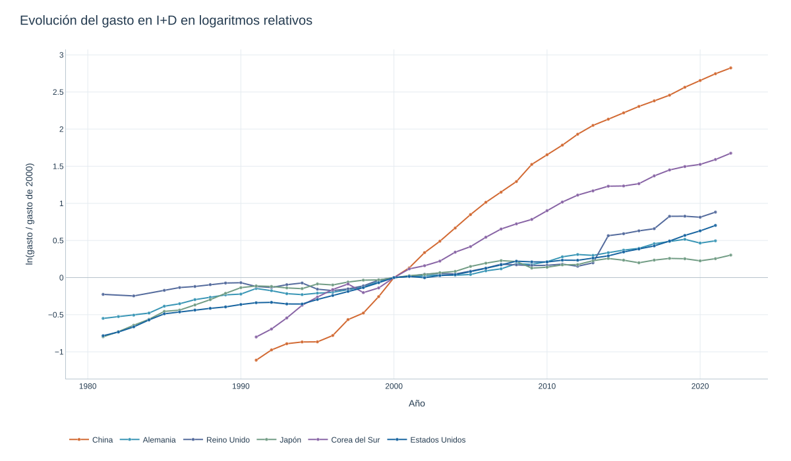
Investigación y crecimiento de la productividad
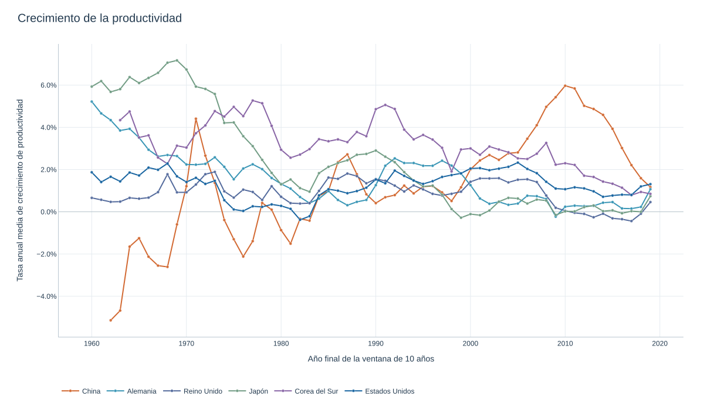
Investigación y crecimiento de la productividad
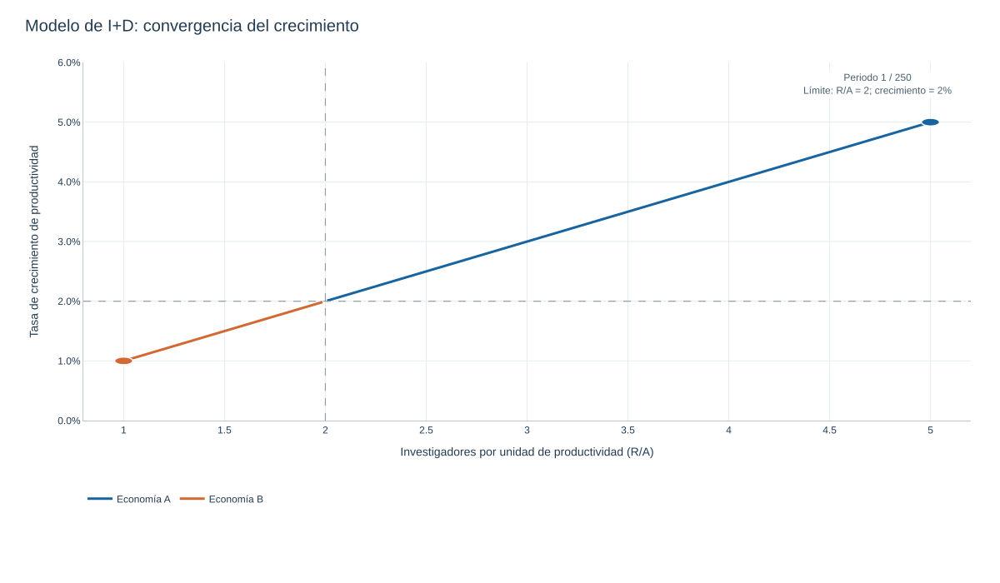
Investigación y crecimiento de la productividad
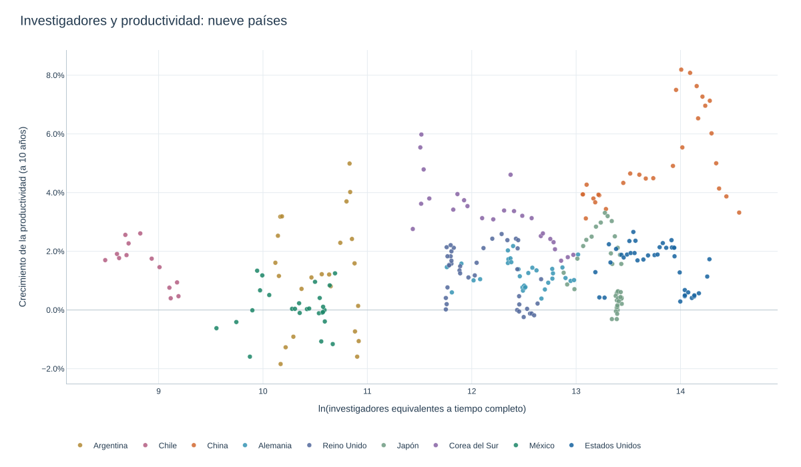
Investigación y crecimiento de la productividad
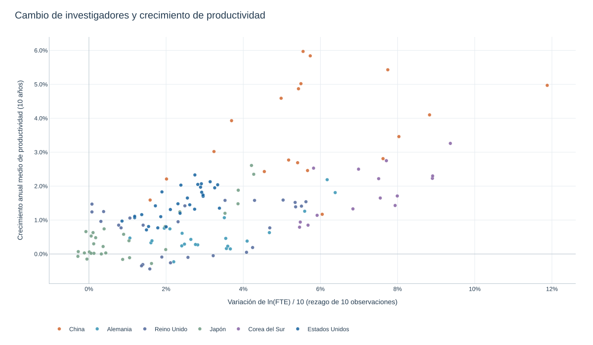
Investigación y crecimiento de la productividad
“Age and Great Invention” (Jones, 2010):
Jones ha investigado mucho sobre cómo la ciencia se ha vuelto más difícil con el tiempo, en el sentido de que hoy los científicos tienden a ser mucho mayores cuando producen ideas que son dignas de un premio Nobel o algún premio similar.
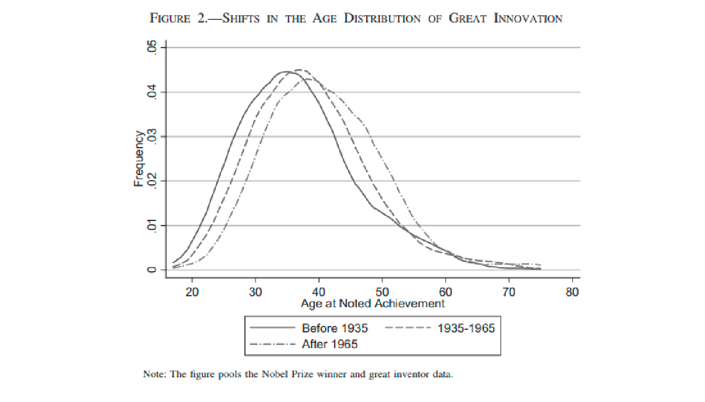
Investigación y crecimiento de la productividad
“Are Ideas Getting Harder to Find?” (Bloom, Jones, Van Reene, Web (BJVW), 2019):
En muchos modelos, el crecimiento económico surge de las personas que crean ideas, y la tasa de crecimiento a largo plazo es el producto de dos términos: el número efectivo de investigadores y su productividad de investigación.
BJVW presentan evidencia de varias industrias, productos y empresas que muestran que el esfuerzo de investigación está aumentando sustancialmente mientras que la productividad de la investigación está disminuyendo considerablemente.
A través de una amplia gama de estudios de casos en varios niveles de desagregación, encontramos que las ideas, y en particular el crecimiento exponencial que implican, son cada vez más difíciles de encontrar. El crecimiento exponencial resulta de grandes aumentos en el esfuerzo de investigación que compensan su productividad decreciente.
Investigación y crecimiento de la productividad
“Are Ideas Getting Harder to Find?” (Bloom, Jones, Van Reene, Web (BJVW), 2019):
Un buen ejemplo es la ley de Moore: el número de investigadores requeridos hoy para lograr la famosa duplicación cada dos años de la densidad de los chips de computadora es más de 18 veces mayor que el número requerido a principios de los años setenta.
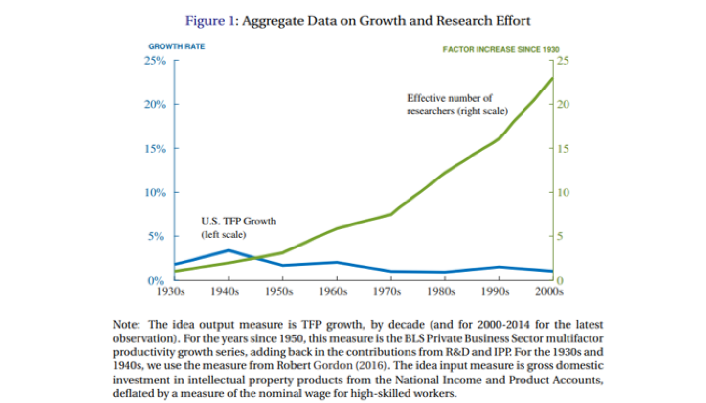
Investigación y crecimiento de la productividad
“Are Ideas Getting Harder to Find?” (Bloom, Jones, Van Reene, Web (BJVW), 2019):
BJvRW examinan industrias individuales o tipos de productos para establecer que la “productividad ideal” cae.
Puede ser que las ideas no se traduzcan perfectamente a la productividad, o que estemos difundiendo nuestros esfuerzos de investigación en una lista cada vez más amplia de industrias o líneas de investigación
En conjunto, esto parecería una idea decreciente de productividad.
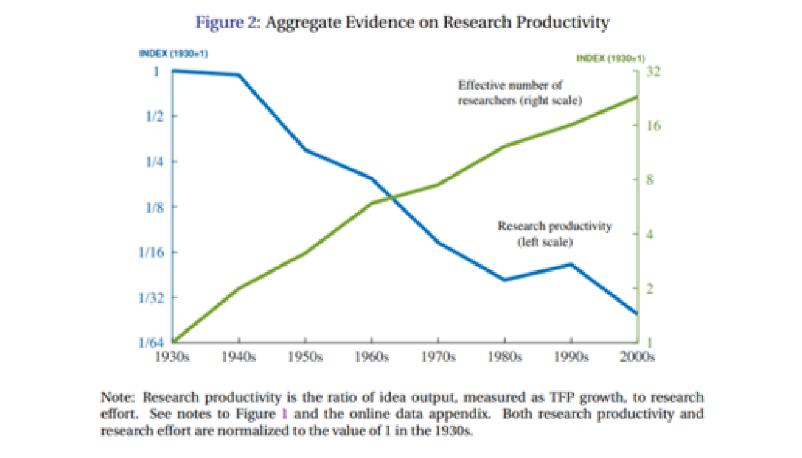
Investigación y crecimiento de la productividad
“Are Ideas Getting Harder to Find?” (Bloom, Jones, Van Reene, Web (BJVW), 2019):
No hay disminución en la tasa de crecimiento de los transistores, pero tampoco hay un aumento, a pesar del mayor número de investigadores.
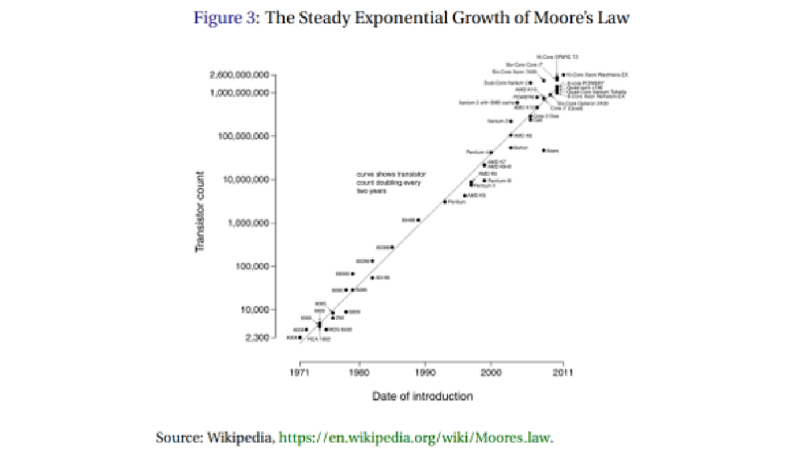
Investigación y crecimiento de la productividad
“Are Ideas Getting Harder to Find?” (Bloom, Jones, Van Reene, Web (BJVW), 2019):
Lo que esto significa es que la “idea de productividad del transistor” está cayendo aproximadamente el 10% por año. La Ley de Moore sigue vigente, pero se necesitan 78 veces más investigadores para descubrir cómo duplicar la densidad de los transistores que en 1970.
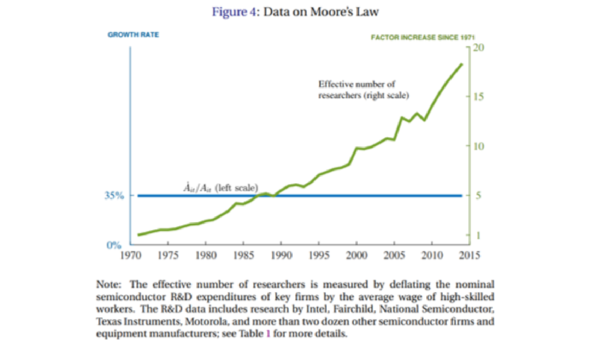
Investigación y crecimiento de la productividad
“Are Ideas Getting Harder to Find?” (Bloom, Jones, Van Reene, Web (BJVW), 2019):
Implicaciones para el crecimiento:
La pregunta que surge es si esto implica que el crecimiento económico se desacelere hasta cero. Posiblemente no.
Lo más probable es que las ideas tengan una tasa de crecimiento incluso si la productividad de ideas está disminuyendo con el tiempo.
A medida que acumulamos más ideas, la tasa de crecimiento de las ideas disminuye: la productividad ideal disminuye.
Pero solo porque la productividad ideal se reduce a medida que obtenemos más ideas no significa que la tasa de crecimiento de las ideas esté disminuyendo. ¿Por qué?
Porque el esfuerzo de la investigación está aumentando con el tiempo debido al crecimiento de la población.
Si la proporción de personas que trabajan como investigadores es constante, entonces su número absoluto está aumentando con el tiempo.
Investigación y crecimiento de la productividad
“Are Ideas Getting Harder to Find?” (Bloom, Jones, Van Reene, Web (BJVW), 2019):
Implicaciones para el crecimiento:
La tasa de crecimiento de la población efectiva ha disminuido: si la población que proporciona investigadores comienza a crecer más lentamente, entonces el esfuerzo crece más lentamente y la tasa de crecimiento a largo plazo de las ideas continúa.
Una disminución en la proporción de la población que está haciendo investigación: esto generaría una tasa de crecimiento de ideas a corto plazo más baja, ya que el esfuerzo tendría una tasa de crecimiento a corto plazo más baja por un tiempo a medida que avanzábamos hacia una menor proporción de personas que realizan investigaciones.
Una caída exógena en el nivel de la productividad ideal. En este caso, la tasa de crecimiento de las ideas eventualmente volverá a subir a lo que era antes, después de tener un menor crecimiento de la productividad hacia el estado estacionario.
Afectaciones por políticas públicas: subsidios para investigación básica, política fiscal con respecto al tratamiento del gasto en I&D, etc.
Investigación y crecimiento de la productividad
“Superexponential long-term trends in information technology” (Nagy, et. al. 2011):
La Ley de Moore ha creado una percepción popular del progreso exponencial en la tecnología de la información.
¿Pero es el progreso de TI realmente exponencial?

Investigación y crecimiento de la productividad
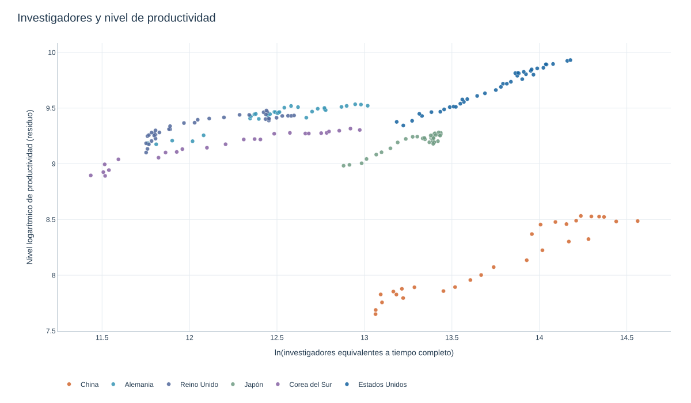
Investigación y crecimiento de la productividad
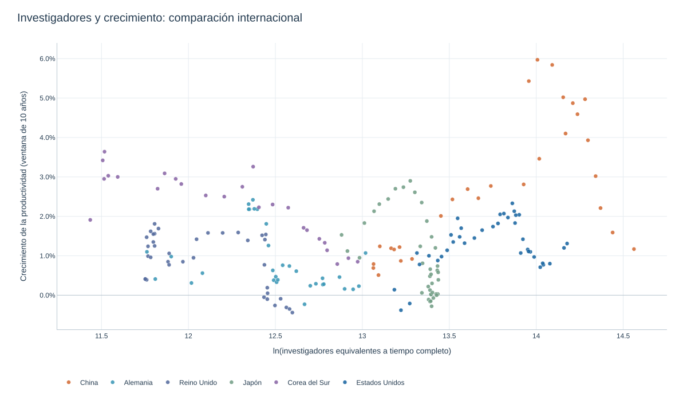